GKEを触ってみる
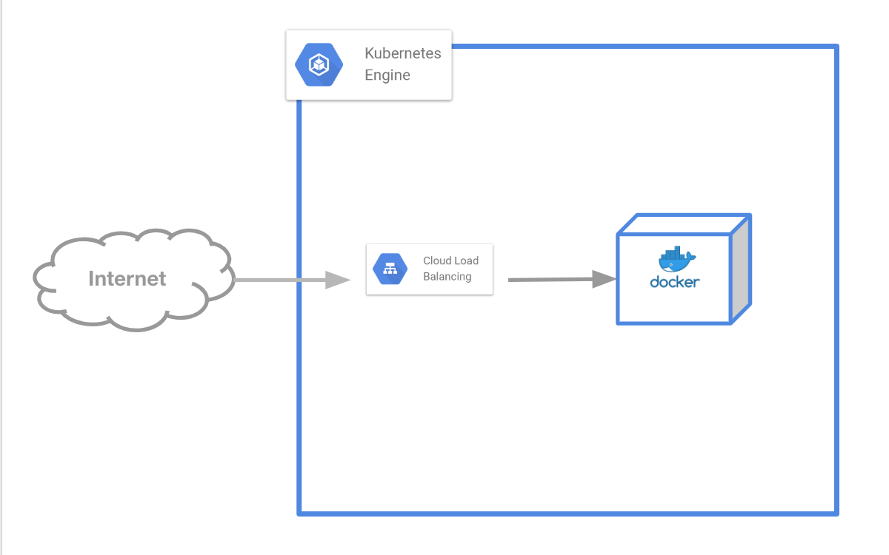
Kubernetesの空気感を知るために、クラスターを立ち上げてシンプルなWebアプリケーションを起動してみましょう
- GKEクラスターを構築する
- Dockerを起動する
- ロードバランサでリクエストを受ける
GCPへログイン¶
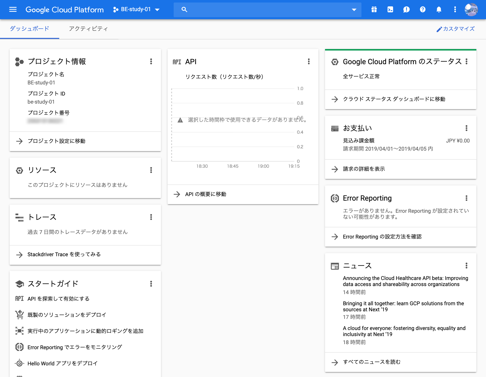 https://console.cloud.google.com/home/dashboard
今回はGoogle Cloud Platform のマネージドKubernetesである "Google Kubernetes Engine" を使います。
まずはブラウザでGCPのコンソールを表示しましょう。
Kubernetesクラスターの作成¶
Kubernetesのクラスターを作成します。
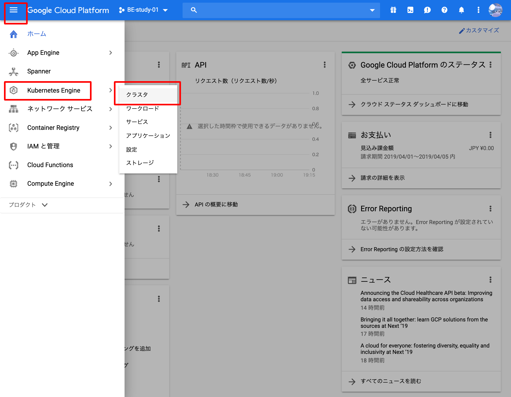 GCPコンソールのメニューを展開し、 "Kubernetes Engine > クラスタ" を選択します。
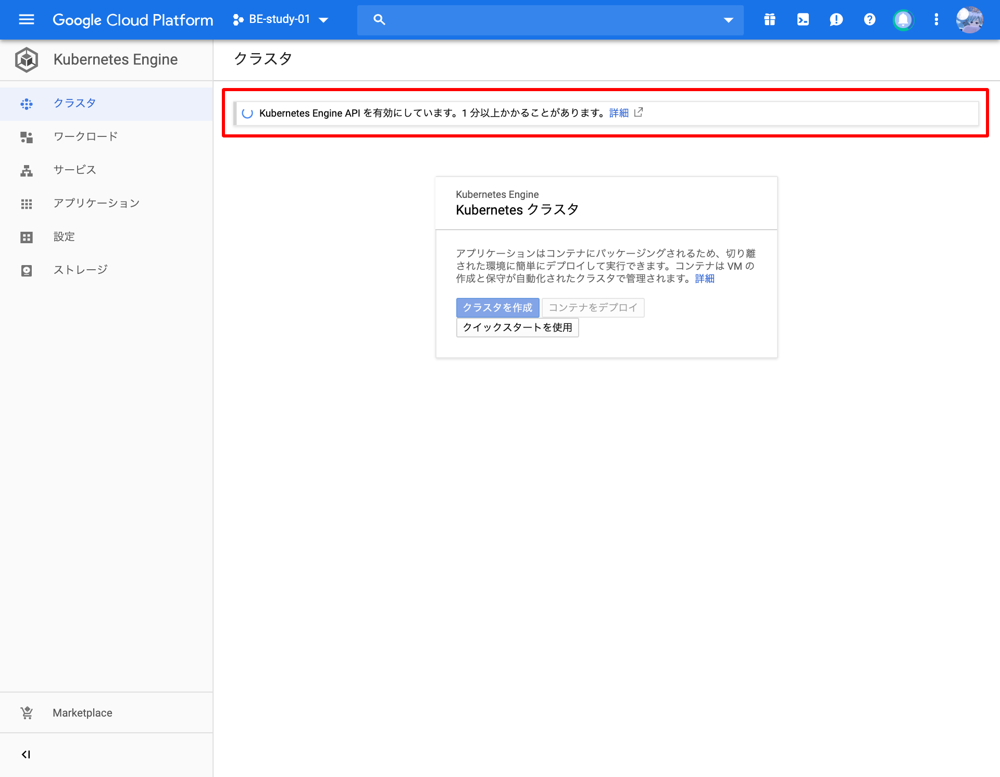 GKEを初めて選択する場合はAPIの有効化が必要になります。1分ほど待ちましょう。
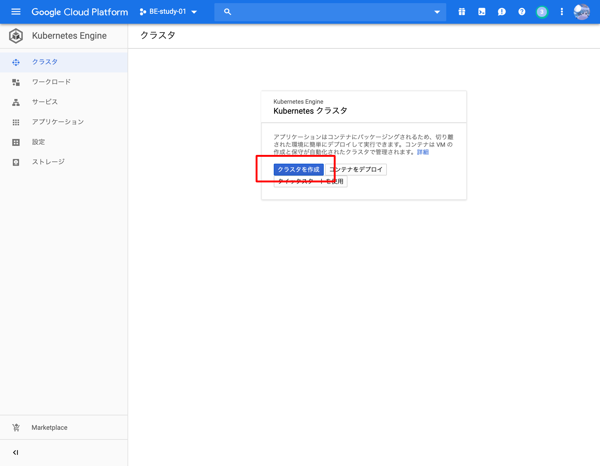 "クラスタの作成" を選択して作成を開始します。
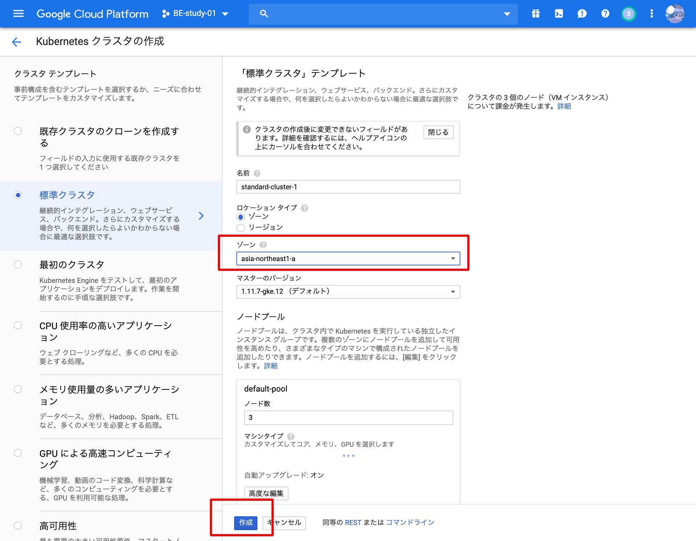
ゾーンだけ "asia-northeast-1a" (東京)に変更します。ゾーンはデータセンターの場所のことです。
変更後、 "作成" を押下します。
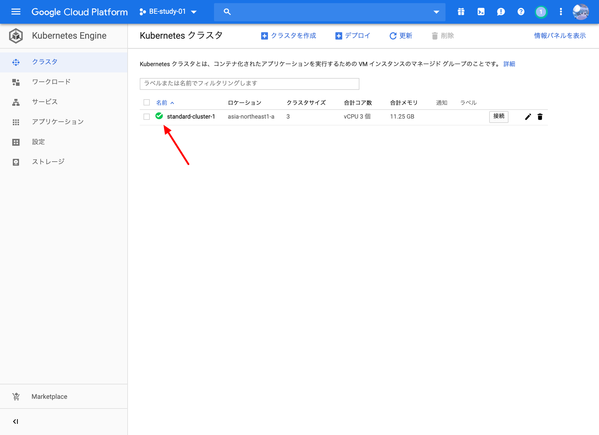
GKEの作成は5分ほど必要です。
ステータスがグリーンになったらKubernetesクラスターの作成完了です！
CLIからKubernetesを使用する準備¶
以降、コマンドはGCPコンソールで動かすことができるシェル(Cloud Shell)で操作します。
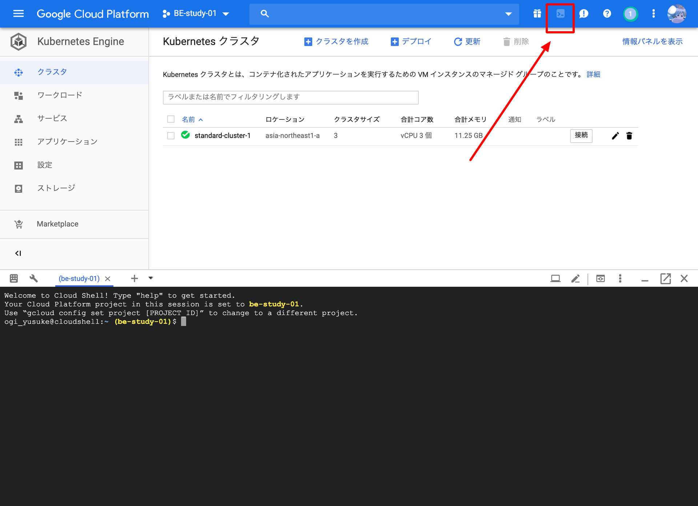
Cloud ShellはGCPのヘッダーのボタンを押すことで起動します。
シェルの立ち上げに3分ほどかかるので少し待ちましょう。
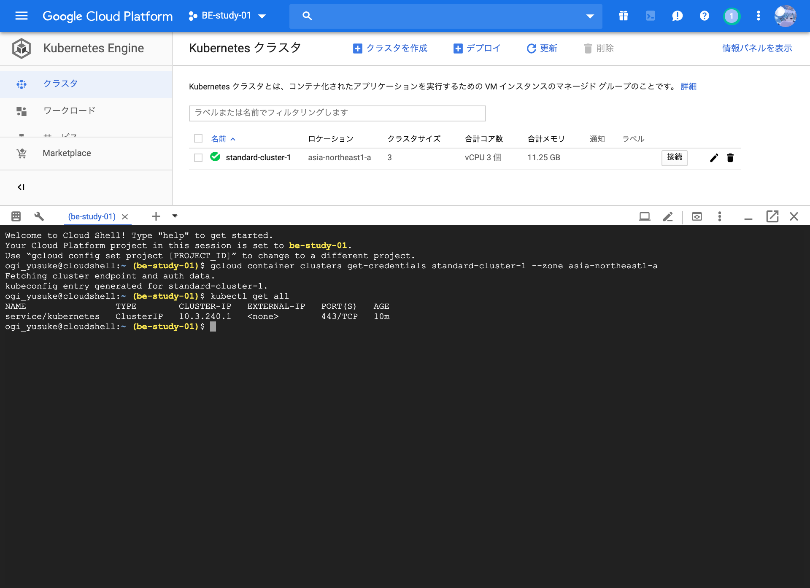 シェルの立ち上げ後、KubernetesをCLI上で操作するための認証情報を取得します。
$ gcloud container clusters get-credentials standard-cluster-1 --zone asia-northeast1-a kubeconfig entry generated for standard-cluster-1.
認証できているか確認のため、KubernetesをCLIで操作するための kubectl コマンドでKubernetes上の現在のObjectsを表示してみます。
$ kubectl get all NAME TYPE CLUSTER-IP EXTERNAL-IP PORT(S) AGE service/kubernetes ClusterIP 10.3.240.1 <none> 443/TCP 10m
Objects とは
Kubernetesを構成するリソースのことを "Objects" と呼びます。
Dockerコンテナ・ロードバランサ・認証/認可・オートスケール・サービスディスカバリ・セルフヒーリングなど、様々な責務を持ったObjectsが存在します。
Objectsは独自に作成することも可能です。
非常に機能が多く一気に学ぶと混乱しやすいため、この章ではDeploymentとServiceだけを意識すると良いでしょう。
Dockerを起動する¶
NginxのDockerイメージをGKE上で起動してみましょう。
kubectl run <命名> --image=<Dockerイメージ> でDockerを起動することができます。
今回は "handson" という名前で "nginx Dockerイメージ" を起動してみましょう。
また、立ち上げたnginxコンテナへトラフィックを流したいため、 --port 80 で80ポートでトラフィックを受けられるよう設定します。
$ kubectl run handson --image nginx --port 80 deployment.apps/handson created
現在のKubernetesのObjectsを確認してみます。
以下のように2行目の"STATUS"が"Running"の表示になっていることを確認してください。
新しく現れたObjectsが複数ありますが、 「とりあえずnginxのDockerイメージが立ち上がった」 ことを確認できれば問題ありません。
$ kubectl get all NAME READY STATUS RESTARTS AGE pod/handson-57bb9b4684-mgdkl 1/1 Running 0 10s NAME TYPE CLUSTER-IP EXTERNAL-IP PORT(S) AGE service/kubernetes ClusterIP 10.3.240.1 <none> 443/TCP 1h NAME DESIRED CURRENT UP-TO-DATE AVAILABLE AGE deployment.apps/handson 1 1 1 1 10s NAME DESIRED CURRENT READY AGE replicaset.apps/handson-57bb9b4684 1 1 1 10s
ロードバランサの起動¶
Kubernetes上でロードバランサを作成して、先程作成した"handson"というnginxコンテナへトラフィックを流してみましょう。
kubectl expose でロードバランサを作成することができます。
以下の通りロードバランサ経由でコンテナにトラフィックを流してみましょう。
$ kubectl expose deploy handson --port=80 --target-port=80 --type=LoadBalancer service/handson exposed
少し待つと、 service/handson の "EXTERNAL-IP" が付与されます。
$ kubectl get all NAME READY STATUS RESTARTS AGE pod/handson-86f796b8b7-m68sr 1/1 Running 0 4m NAME TYPE CLUSTER-IP EXTERNAL-IP PORT(S) AGE service/handson LoadBalancer 10.3.243.4 34.85.67.170 80:32621/TCP 4m service/kubernetes ClusterIP 10.3.240.1 <none> 443/TCP 2h NAME DESIRED CURRENT UP-TO-DATE AVAILABLE AGE deployment.apps/handson 1 1 1 1 4m NAME DESIRED CURRENT READY AGE replicaset.apps/handson-86f796b8b7 1 1 1 4m
表示されたIPへアクセスして、nginxに接続できていることを確認しましょう
GUIで動作確認¶
GCPコンソールからKubernetes Objects の詳細を閲覧することができます。
今回動かした "handson" という名前をつけたObjectsがどのように動いているのかGCPコンソール上で見てみましょう。
コンテナの状態を確認
( StackDriver を有効化していないとCPU/Memoryなどのメトリクスは取得できません)
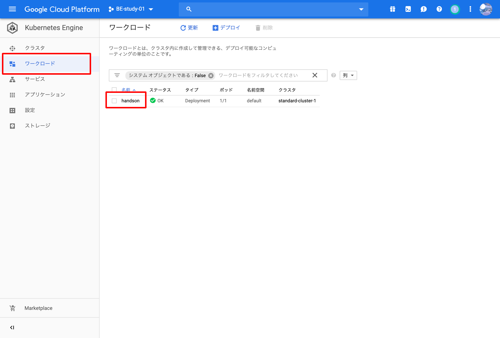
ロードバランサの確認
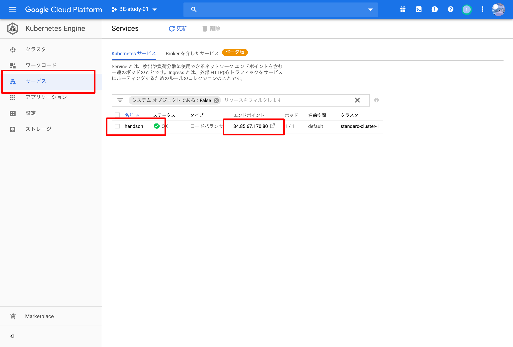
ログの閲覧 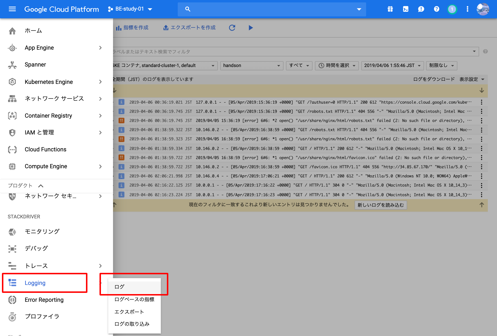 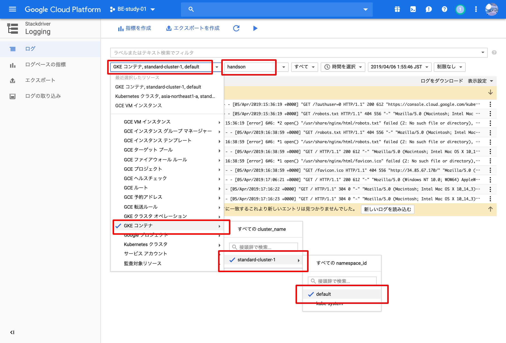
まとめ¶
GKEのクラスターを作成し、 kubectl コマンドからnginxのDockerコンテナを動かしてロードバランサを介してWeb上に公開することができました。
コンテナを動かしてHTTPリクエストを受けるだけの単純なアプリケーションならここまでの操作で可能でしょう。